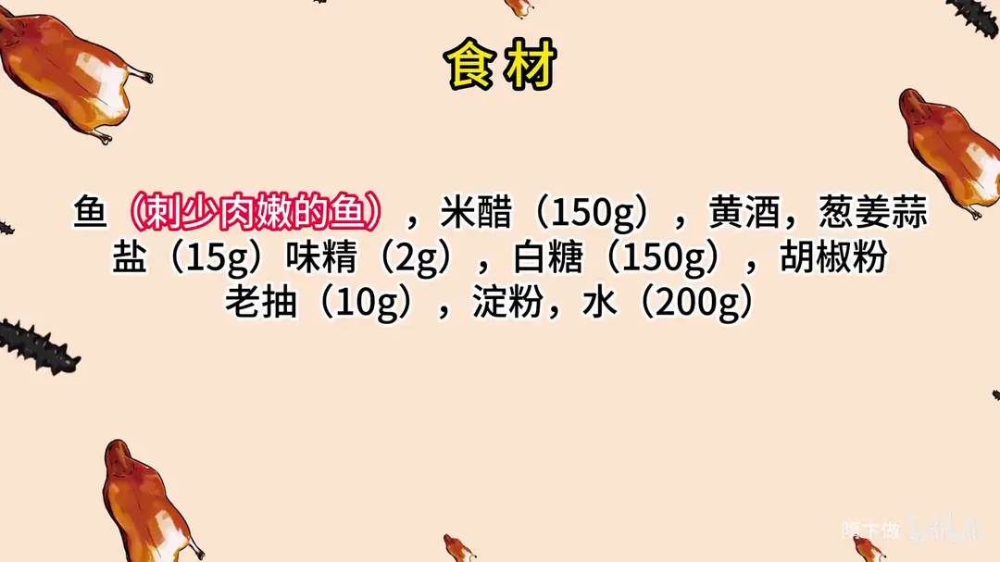
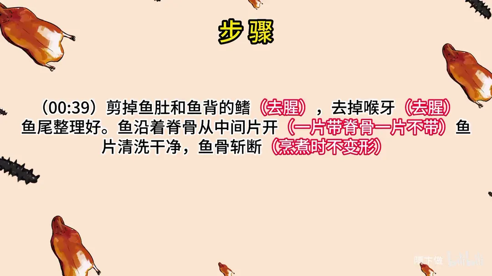
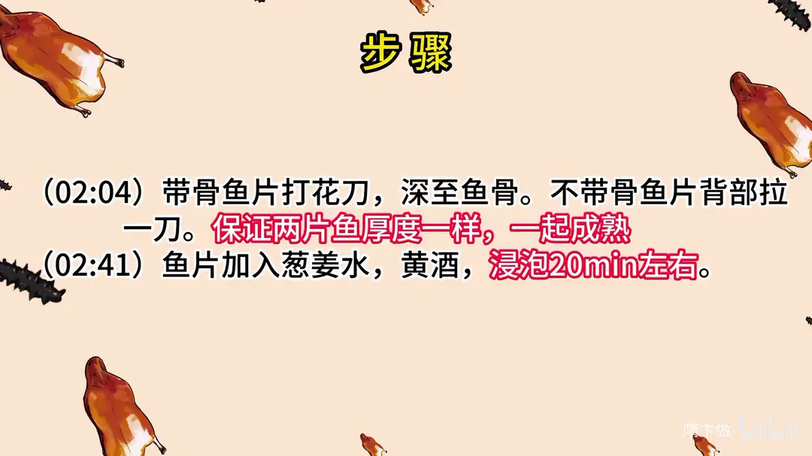
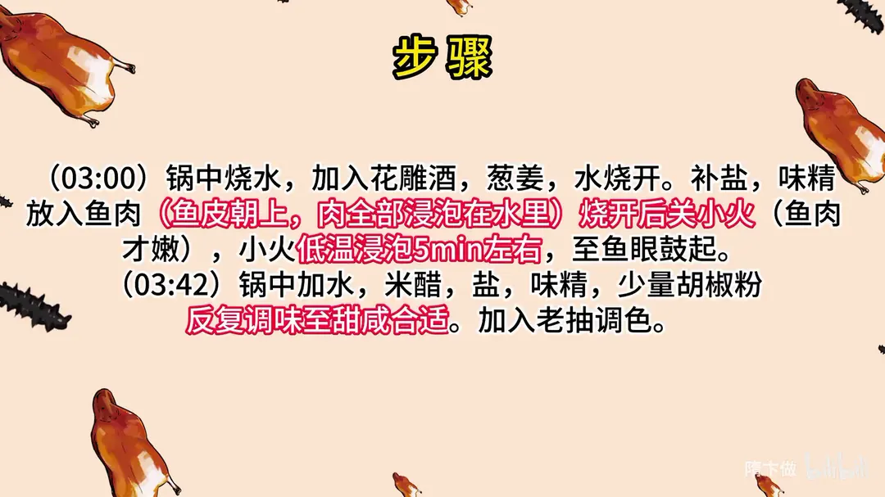
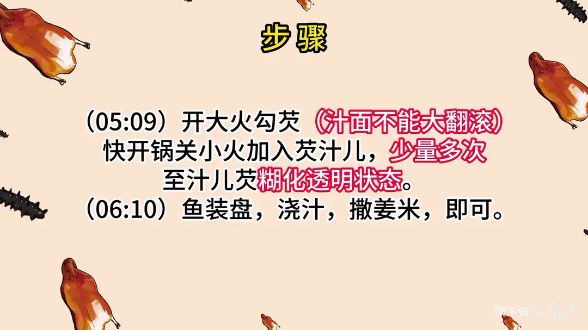

西湖醋鱼
隋卞一做。选一条刺少肉嫩的鱼，沿脊骨片成带骨、不带骨两片，打花刀后泡葱姜水去腥，再下微沸的水里小火低温浸熟，最后浇上用米醋、白糖调的酸甜醋汁。
原视频：https://www.bilibili.com/video/BV1gP411x7x7
食材
鱼、米醋、黄酒 等 11 样
| 类别 | 用料 | 用量 |
|---|---|---|
| 主料 | 鱼（刺少肉嫩的鱼） | 一条 |
| 调料 | 米醋 | 150g |
| 调料 | 黄酒 | 适量 |
| 调料 | 葱姜蒜 | 适量 |
| 调料 | 盐 | 15g |
| 调料 | 味精 | 2g |
| 调料 | 白糖 | 150g |
| 调料 | 胡椒粉 | 适量 |
| 调料 | 老抽 | 10g |
| 调料 | 淀粉 | 适量 |
| 调料 | 水 | 200g |
步骤
- 整理鱼身：剪掉鱼肚和鱼背的鳍，去掉喉牙，都是为了去腥，鱼尾也整理好。
- 片鱼：鱼沿着脊骨从中间片开，一片带脊骨、一片不带骨；鱼片清洗干净，鱼骨斩断，烹煮时才不变形。
- 打花刀：带骨鱼片打花刀，深至鱼骨；不带骨鱼片背部拉一刀。要保证两片鱼厚度一样，才能一起成熟。
- 泡葱姜水：鱼片加入葱姜水、黄酒，浸泡 20min 左右。
- 低温浸鱼：锅中烧水，加入花雕酒、葱姜，水烧开后补盐、味精，放入鱼肉，鱼皮朝上、肉全部浸泡在水里。烧开后关小火，鱼肉才嫩，小火低温浸泡 5min 左右，至鱼眼鼓起。
- 调醋汁：锅中加水、米醋、盐、味精、少量胡椒粉，反复调味至甜咸合适，再加入老抽调色。
- 勾芡：开大火勾芡，汁面不能大翻滚；快开锅时关小火加入芡汁儿，少量多次，至汁儿芡糊化呈透明状态。
- 装盘：鱼装盘，浇汁，撒姜米，即可。
讲解要点
难度：★★★★☆（鱼谁都能买，难在浸鱼的火候和醋汁的酸甜平衡——这道菜真正的秘密全在那碗汁）
为什么这么做
- 选刺少肉嫩的鱼：西湖醋鱼不挑鱼种，草鱼、鲤鱼、鲈鱼、鳜鱼都行；片子能看见鱼骨、吃的时候不用挑刺，才算合格。用鲤鱼属于加难度，土腥味更重。
- 剪鳍、去喉牙、去黑膜：鳍下没肉、腥味却大；喉牙（喉咙里的那块骨）腥味最重；生鱼带黑膜说明水质差、格外腥。这三处不去，后面怎么调味都压不住。
- 鱼骨要斩断：整根脊骨在受热时会收缩，把鱼片顶得变形；斩断后片子能平铺，形状才不跑。
- 打花刀是为了同时成熟：带骨那片厚、不带骨那片薄，所以在厚的一侧也拉一刀，让两片的厚度一致。刀数多少不重要，均匀才重要。
- 葱姜黄酒水浸泡：鱼在浸泡时把腥味「置换」出来；下手攥一攥葱姜，把汁水挤到水里，泡 20 分钟就够。
- 水开转小火浸熟：鱼皮朝上、肉全部没入水中，水一开就关小火；大火翻滚会把鱼肉冲散、煮老，低温浸泡出来的肉才嫩。
- 醋汁不放油：全程只用水、米醋、糖、盐调，反复尝、反复补糖补盐，最后一点点老抽找色。汁里没有油，酸甜才干净利落。
容易翻车
- 鱼片厚度不均，薄的那片熟了、厚的那片还带生，所以花刀一定要打到跟另一片一样厚。
- 泡好的两片鱼要煮到「鱼眼鼓起」才算到位，火一大鱼肉就柴。
- 勾芡时汁面不能大翻滚：大滚时下芡容易起疙瘩，要快开锅时关小火、少量多次地淋，搅匀后再开大火让它糊化，看到芡汁变透明才行。
- 酸甜比例是本菜的难点，糖和盐要边尝边补，一次倒足很容易偏。
原片尾卡





原片文案
AI 字幕校准稿
其实这道菜最大的秘密，就是那个汁的调味。你们跟着学，我就一定要让你们学会。从杭州回来了，得给你们交作业——感觉天天不是你们跟我交作业，是我每出去一趟，回来之后给你们交作业。今天西湖醋鱼。
西湖醋鱼其实用什么鱼都行，刺少肉嫩这类鱼都可以做，比如像草鱼、鲤鱼、什么鲈鱼、鳜鱼。今天我们选择用鲤鱼做。鲤鱼肉里面的土腥味相对于其他鱼可能会稍微重一点，我也算是挑战一下自己，鲤鱼如果做得不出错，那其他鱼基本都没啥问题。来吧。
鱼肚子下面这两个小鳍就叫剪掉，这个地方腥味还挺大的；把鱼尾巴也整理一下，还有背部的鳍。然后把鱼从中间片开，按住，沿着鱼的脊骨。中间有喉牙，一定要去，它很腥的。把鱼尾巴也片成两半。
然后两片鱼洗一下。如果说你买的那个鱼带黑膜，那就证明它生长的环境水质不太好，特别腥，一定要把它洗干净。然后鱼骨头这要斩一下，要不斩断它会变形、变得很大。打花刀，深至鱼骨。有的师傅说必须打多少多少片，这个老崔同志认为，只要它均匀，多少片并不重要，你得知道打花刀的目的就是为了一起成熟。
还有一半、半片是不带骨头的，这个要在背部厚的肉的地方也要拉一刀，斜着拉一刀。这个肉的厚度跟带骨头那片鱼的肉厚度是一样的，它就会一块成熟。关键点。然后需要加葱姜水，加黄酒，要泡一下，要转一下，把那个葱香味全部都要转到水里面去，泡上它 20 分钟，休息会儿。
锅里烧水，撇一下，然后里边加上花雕酒，再补点葱姜，反复进行去腥。这个水烧开了，里边少补点盐，来几粒味精往那一放。鱼皮不能朝下，肉的部分全部都浸泡在水里面。烧开了，我们关小火，让它慢慢地浸泡，这样出来的鱼肉它才嫩。
我们现在是调西湖醋鱼那个汁。锅洗干净，里面加入水，西湖醋鱼的汁是不用油的，米醋、味精、少量胡椒粉、白糖稍微多加点，搁点盐，再来点白糖。白糖还是不高，盐得多来点，没那么简单，再来点，别让那个咸，咸还得适中，这就行了。所有的比例不用记，到最后会给你们很详细的比例。需要老抽调个色。
开小火，来开始勾芡，开大火。开火之后不能让它这个汁面大翻滚，要开锅了，就给它关小再搅；再开大火加热，快沸腾了，再关小火，少量多次。把这个打入的淀粉全都搅匀了之后，然后再开一下大火让它加热。你看里边这个淀粉慢慢地就糊化，变色了、变透明状态，这样就可以了。
鱼也好了，差不多可以了。这鱼搁里边低温浸泡着，有个 5 分钟左右，鱼眼鼓了就可以。来浇汁，西湖醋鱼，还知道吃最肥美的地方、没有刺的地方。
虽然是鲤鱼，但是腥味还是很差的。不得不承认，总体来说这条鱼真的没有西湖国宾馆的那好吃，人家的鱼实在是太好了，咱们的鱼是真真实实地赶不上。但是这个汁我可以给你们保证，不会比那个差。这道菜最大的秘密就是那个汁的调味，我会给你们最详细的比例，你们跟着学，我就一定要让你们学会。鱼没有他们那好，但是我们调味上面一定不能输。如果调味掌握好的话，这道菜真没有那么难。